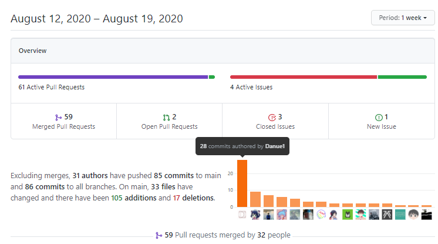

'I want go home' 레포에서 오픈소스 기여 연습하기
오픈소스 기여를 언젠가는 해보고싶었다…
쉽게 연습해보자
앞으로 종종 재밌거나 유용한 깃허브 repo들을 소개해드릴까 합니다!
I want to go home
트위터에서 이수호 개발자님의 트윗을 보게 되었습니다.
아직 팀에서 공동작업을 했지만 제가 뭔가 주도적으로 다른 프로젝트에 기여해보고 한적은 없었기 때문에 재밌어보였습니다.
집에 가고 싶을 때 각종 언어(프로그래밍 언어, 인간 언어, 동물 언어 모든 걸 포함)로 집에 가고 싶음을 어필하는 저장소입니다.
제가 fork 했을 당시에는 아직 한글 프로그래밍 언어 아희로 쓰여진 글이 없었기에 아희로 코드를 짜고 PR을 넣었습니다.
기존 레포를 fork하고 나면 fork한 레포 상단에 풀리퀘를 넣을거냐고 깃허브가 친절히 표시를 해주더군요
이후에는 각자 자신이 좋아하는 언어들로 코드를 짠 후 커밋을 하면 됩니다.
제가 겪었던 시행착오들을 적어보겠습니다.
PR시도 1차
넣었지만 #20에 이미 아희로 커밋을 하신분이 계셨습니다.
제가 fork하고나고 난 뒤 PR을 날리는 동안 먼저 PR하신분이 있던것이었습니다.
미쳐 확인을 못했네요.
.aheui로 확장자를 저는 제출했었고 #20을 .aheui로 바꾸는 편으로 PR을 수정해달라는 피드백을 받았습니다

PR시도 2차
이번엔 기존 아희(aheui)가 ahui로 작성되어있고 txt로 코드를 적어놓은것을 언급하며 다시 PR을 시도했습니다
이때까지는 모르고있었습니다….
우측 위에 +0 −13이 보이시나요
추가된건 없고 제거만 했다는 이야기입니다…
실수로 작업했던 아희 코드를 파일에 저장시키지 않고 커밋하고 푸시를 했던 것 같습니다…
착각하고 풀리퀘를 날렸지만 통과가 되어서 아희 레포에 아희로 쓰여진 집에 가고싶다가 없는 상태였습니다.
다행히 이전에 아희 코드를 작성하셨던분이 이 문제를 발견해주셔서 Revert 되었습니다.
PR시도 3차
다시 fix한 후 PR을 날렸고 이번에는 리뷰까지 확실히 마친 후 머지되었습니다🎉🎉
이렇게해서 아희로 저장소에 기여를 하게 되었습니다
소감
PR을 해보면서 뭔가 재밌기도하고 뿌듯하기도해서 좋았던것 같습니다.
이번에 여러가지 실수들을 했지만 다음에 실제 프로젝트에 기여를 할 때는 조금 더 성공적으로 PR할 수 있는 밑거름이 된 것 같습니다.
특히 이번에 실수했던 fork를 했지만 원 저장소가 수정되어서 문제가 발생하는 경우가 있을 수 있기 때문에 이를 조심해야겠습니다.
또한 꼭 커밋하기 전에 Ctrl + S 를 누르고 저장을 한 후 커밋을 해야하고 풀 리퀘시 다시 코드 리뷰를 통해서 올바르게 올라갔는지 2차 확인을 거쳐야겠다고 생각했습니다.
이 I want go home 프로젝트에서는 프로그래밍 언어 뿐만이 아니라 인공어, 동물어 등등 다양한 방법으로 집가고싶다를 표현하며 PR을 연습할 수 있으니 한번 도전해보시는것도 좋을 것 같습니다!

다뉴님께서 이 프로젝트에 많은 기여를 하셨습니다.
어떻게 시작해야할지 모르겠다면 다뉴님이 PR을 엄청 잘 하고계시니 다뉴님의 PR을 참고하셔서 이슈를 남기셔도 좋을 것 같습니다.
집가고싶다……
글에 사용을 허락해주신 다뉴님 감사합니다 🙌